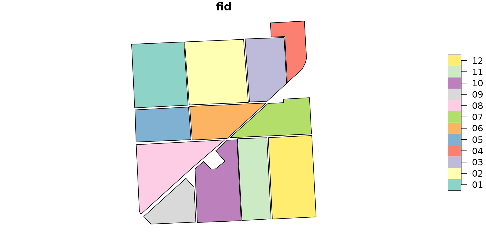

R/data.R
samplecrops.RdDataset containing boundaries of some field crops of the farm Bonifiche Ferraresi located in the estate of Jolanda di Savoia (FE, Italy), which are used in the vignette "The sen2rts workflow".
data(samplecrops)
A polygon sf dataset in UTM 32N CRS
with 12 rows (sample crops) and the variables fid with crop IDs
("01" to "12").
#> Simple feature collection with 12 features and 1 field #> Geometry type: MULTIPOLYGON #> Dimension: XY #> Bounding box: xmin: 733652 ymin: 4971716 xmax: 735270.8 ymax: 4973496 #> Projected CRS: WGS 84 / UTM zone 32N #> First 10 features: #> fid geometry #> 1 01 MULTIPOLYGON (((733679 4972... #> 2 02 MULTIPOLYGON (((734157.5 49... #> 3 03 MULTIPOLYGON (((734686 4972... #> 4 04 MULTIPOLYGON (((734996.2 49... #> 5 05 MULTIPOLYGON (((733691.6 49... #> 6 06 MULTIPOLYGON (((734183.8 49... #> 7 07 MULTIPOLYGON (((734515.4 49... #> 8 08 MULTIPOLYGON (((733734.6 49... #> 9 09 MULTIPOLYGON (((733759 4971... #> 10 10 MULTIPOLYGON (((734208.5 49...